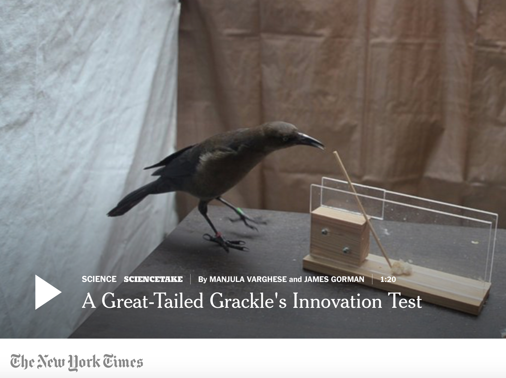

© National Geographic Society
Watch grackles solve a challenge
from Aesop's Fables
Read the story that goes with the video
NEWS
More on grackles at GitHub & follow their adventures on Twitter #TheGrackleProject & YouTube
The latest grackle results and the launch of ManyIndividuals in a talk in the FINE seminar series
Field Notes: Bird Brains and Behavioral Flexibility by Josie Hubbard for The Ethogram
Press release: Reacting to a changing environment involves inhibiting previous behavior
Just submitted Is flexibility manipulatable? for post-study peer review!
Launched Peer Community in Registered Reports
Sevchik's senior thesis found male-biased dispersal
How to train your grackle to use a computer article is out
We discovered the 2nd case of male parental care in great-tailed grackles & our preregistration passed pre-study peer review at PCI Ecology!
Preregistrations have passed pre-study peer review at PCI Ecology! Is flexibility
linked with exploration,
& foraging/social behavior? What learning mechanisms do grackles use?
Learn how early career researchers (ECRs) are leading individuals and institutions in adopting open practices to improve research rigor at...


© NY Times
The grackle's secret to success
Watch the video and read the story
|
What is behavioral flexibility and is it a mechanism for surviving in new environments?
Behavioral flexibility, the ability to adapt behavior to new circumstances, is thought to play an important role in a species' ability to successfully adapt to new environments and expand its geographic range. However, flexibility is rarely directly tested in species in a way that would allow us to determine how flexibility works and predict a species' ability to adapt their behavior to new environments. I use great-tailed grackles (an urban bird) as a model to investigate this question because they have rapidly expanded their range into North America over the past 140 years. In Santa Barbara, I found that they are behaviorally flexible and that flexibility is independent from problem solving ability, problem solving speed, other behaviors, and innovativeness, and that grackles can solve some problems with a similar efficiency to New Caledonian crows.
We are currently investigating how great-tailed grackles are able to rapidly expand their geographic range by testing their behavior, immunity, hormones, parasites, and population genetics in three populations from the core of their range to the expanding northern edge. So far, we found that we can manipulate flexibility through serial reversal learning and that this manipulation makes individuals more flexible and more innovative in a new context (a puzzlebox). We also found that reversal learning (a measure of flexibility) positively correlates with performance on the go/no go task (a measure of inhibition), and has no relationship with detour performance (a measure of inhibition) or causal cognition (there was no evidence of causal cognition, though this could be due to our experimental design). Contrary to most bird species studied so far, great-tailed grackles show male-biased dispersal. We discovered the second case of male parental care in great-tailed grackles and are seeing this behavior in multiple locations. The one male-juvenile pair we were able to catch showed that they are not genetically related, indicating that the caring male was not contributing to his direct fitness and instead might perform this behavior as a result of uncertain paternity or as a signal to future mates.
ManyIndividuals
I co-founded a global network of researchers with field sites to investigate hypotheses that involve generalizing across many individuals. We conduct the same tests in the same way across species to determine whether the results of particular experiments are generalizable beyond that species. We are manipulating behavioral flexibility in species that are successful in human modified environments and in endangered species to determine whether an increase in flexibility improves their success in human modified environments. Follow the link to learn about our open, verifiable, and replicable workflow that makes our research better and faster.
Code of conduct
We conduct open, verifiable, ethical research
Our goal is to ethically conduct and promote rigorous research. We avoid exploiting ourselves as scientists, we facilitate equity and diversity by ensuring that no one is discriminated against when reading research outputs, and we make publishing choices that keep funds in academia (see article and presentation for background). We use the mechanisms of transparency and verifiability to achieve this goal so anyone can evaluate our contributions at every step of the research process.
All research that generates experimental data starts off as a registered report (study plan is peer reviewed before data collection/analysis starts) at Peer Community in Registered Reports. We share our datasets and code. We follow the ICMJE guidelines to ensure that all authors deserve the credit and that they receive credit where credit is due.
If research outputs are disseminated via a journal (rather than only at Peer Community In), the journal must have the following features (why? See Logan 2017 and Corina's ethical publishing page):
Be 100% open access
Select articles based on scientific validity, not subjective impact
Be published by an ethical publisher (e.g., non-profit, researcher run)
Is not part of a contract where institutes pay to publish open access (e.g., read and publish agreements, transformative agreements - read why these are unethical here) (note: institutes pre-paying APCs in batches at a journal is ok as long as there is no contract)
The review history must be publicly available
The article must be published under a CC BY license
It should be free to publish (no APCs) or very cheap
We respect individuals who participate in our experiments
We respect the individuals who collaborate with us to provide us with the data on which our science relies, regardless of their species. Their well being is of utmost importance, and we take extra care when we are fully responsible for them (i.e., when conducting behavioral choice tests in captivity).
We strive to take anti-racist and anti-sexist action
Selection of new team members is designed to counteract racist/sexist biases (details here)
We recognize that some lab members require additional supports to safely conduct their work (as in the Safer Science seminar by Amelia-Juliette Demery and Monique Pipkin). We strive to work together to develop and implement these supports
We implement learnings from anti-racist and anti-sexist resources such as those from Dr. Romero-Olivares lab
We cultivate a harassment-free and welcoming environment
Vea una versión en Español
Siehe eine Version auf Deutsch
All members of the lab, along with visitors, are expected to agree with the following code of conduct. We will enforce this code as needed. We expect cooperation from all members to help ensure a safe and welcoming environment for everybody.
The Quick Version
The lab is dedicated to providing a harassment-free and welcoming experience for everyone, regardless of gender, gender identity and expression, age, sexual orientation, disability, physical appearance, body size, race, or religion (or lack thereof). We do not tolerate harassment of lab members in any form. Sexual language and imagery is generally not appropriate for any lab venue, including lab meetings, presentations, or discussions. (However, do note that we work on biological matters so work-related discussions of e.g., animal reproduction are appropriate.) We value individual differences and strive to create a welcoming environment for lab members.
The Less Quick Version
Harassment includes offensive verbal comments related to gender, gender identity and expression, age, sexual orientation, disability, physical appearance, body size, race, religion, sexual images in public spaces, deliberate intimidation, stalking, following, harassing photography or recording, sustained disruption of talks or other events, inappropriate physical contact, and unwelcome sexual attention.
Members asked to stop any harassing behavior are expected to comply immediately.
If you are being harassed, notice that someone else is being harassed, or have any other concerns, please contact Corina Logan (corina_logan [at] eva.mpg.de) immediately. If Corina is the cause of your concern, Margaret Tarampi (margaret [at] tarampi.com) is a good informal point of contact; she does not work for Corina or the Max Planck Institute for Evolutionary Anthropology, and has agreed to mediate. For official concerns, please contact the Max Planck Institute for Evolutionary Anthropology's Ombudsperson or Equal Opportunity Commissioner.
We realize that people come from all over the world to work on research projects in our lab, and we strive to make everyone feel welcome. For example, English may not be the native language of many lab members; therefore, we will take the time to go slowly and prioritize understanding over speed or convenience. As well, many lab members are multi-lingual, which can help facilitate communication.
We expect members to follow these guidelines at any lab-related event.
These Lab Interpersonal Interactions are based on Titus Brown's who cites the original source and credit: http://2012.jsconf.us/#/about & The Ada Initiative. Please help by translating or improving: http://github.com/leftlogic/confcodeofconduct.com. This work is licensed under a Creative Commons Attribution 3.0 Unported License
Professional behavior at work
All lab members are expected to behave professionally at work.
Be on time
No verbal abuse (e.g., belittling, demanding, accusing, blaming)
Work efficiently and effectively - you are responsible for managing interruptions (i.e., focus on work when you are at work)
Follow all rules to ensure your actions comply with permits, land owner wishes, lab policies, and common courtesy to the grackles and to people
If you encounter a problem, figure out at least one potential solution when discussing it with team members, and take charge of implementing the solution if you are an appropriate person to do so
If someone receives two warnings for breach of professional behavior, they will be removed from the team upon their second warning.
|